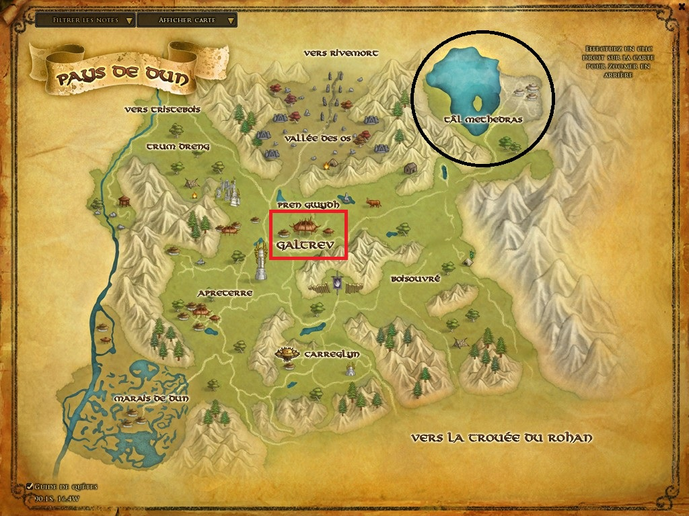

Le Pays de Dun, est un territoire situé à l'est de l'Enedwaith et à l'ouest des Monts Brumeux, où vivent les Hommes de Dun, ou Dunéens (eng. Dunlendings), un peuple d'Hommes ennemis des Rohirrim du Rohan et alliés de Saroumane pendant la Guerre de l'Anneau.Le Pays de Dun est une région assez étendue, caractérisée par de profondes vallées s'ouvrant d'une part sur des plaines, et s'enfonçant d'autre part profondément dans les Monts Brumeux. Le nom de la région vient du teint des Dunéens, qui sont généralement d'un type celtique à la peau foncée.
